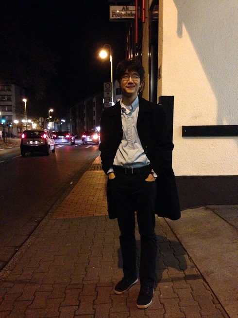
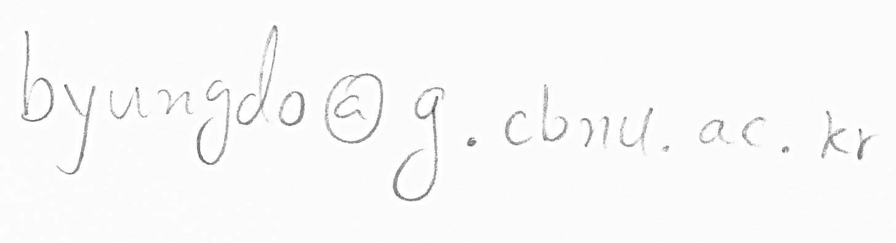
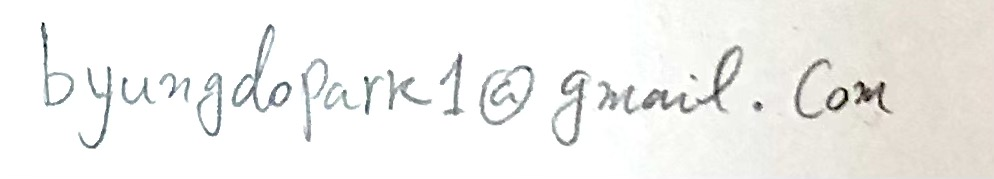

Am Poppelsdorf. Photo by J. R.
About me
I am an Assistant Professor at the Department of Mathematics Education, Chungbuk National University.
Previously, I was a Research Fellow (Postdoc) at the School of Mathematics, Korea Institute for Advanced Study. Before that, I worked in Bonn, Germany as a Postdoctoral Fellow at Max-Planck-Institut für Mathematik and as a guest of Hausdorff Research Institute for Mathematics. I also taught mathematics and advised students in New York City for seven semesters. I received my PhD from CUNY Graduate Center. My thesis is here. Before coming to the US, I studied Mathematics at Yonsei University in Seoul, South Korea.
Here is my CV. My research is supported by the National Research Foundation funded by the Ministry of Science and ICT, Republic of Korea.
Address: Department of Mathematics Education, Chungbuk National University, 1 Chungdaero Seowon-Gu, Cheongju 28644, Republic of Korea
Office: E1-1 Room 110
Phone: +82-43-261-2721
Email:  Alternative email: 
Research Interest
Differential geometry and algebraic topology. Geometric structures on higher bundles, generalized cohomology theories and their equivariant, differential, and twisted refinements. I am also interested in higher categories, index theory, noncommutative geometry, and topology of matters.
Publications and preprints
- Brown representability for directed graphs, with Zachary McGuirk. ArXiv
- Noncommutative differential K-theory, with Arthur J. Parzygnat, Corbett Redden, and Augusto Stoffel, J. Geom. Phys., 174 (2022) 104446 1--40.ArXiv
- A note on the Venice lemma in differential K-theory, Arch. Math., 118(2) (2022) 215--224.
- A classification of equivariant gerbe connections, with Corbett Redden, Commun.
Contemp. Math., 21(2) (2019) 1--40. ArXiv
- Geometric models of twisted differential K-theory I, J. Homotopy and Relat. Struct., 13(1) (2018) 143--167. ArXiv
- A smooth variant of Hopkins-Singer differential K-theory, New York J. Math., 23 (2017) 655--670. ArXiv
In preparation
- Cycle maps in twisted differential K-theory, with Daniel Grady.
- Twisted Atiyah-Jänich theorem, near completion. First draft available.
- Geometric models for twisted differential K-theory II, near completion. First draft available.
Teaching
- Differential Geometry I
- Geometry for teachers I
- Calculus I
Selected talks and slides
- 01 December 2018: 2018 Seoul-Tokyo Conference, Korea Institute for Advanced Study (KIAS), Seoul, Korea.
- 24 April 2018: Topology in Australia and South Korea 2018, IBS Center for Geometry and Physics (IBS-CGP), Pohang, Korea Slides
- 29 January -- 02 February 2018: The 13th KIAS Winter School on Differential Geometry, Korea Institute for Advanced Study (KIAS), Seoul, Korea. Conference venue: Hill Condominium, High 1 Resort, Jeongseon, Korea
- 26 March 2017: Topology Workshop -- Cohomology Theories, Categories, and Applications, The University of Pittsburgh, Pittsburgh PA, USA
- 16 February 2017: Algebraic Topology Seminar, Princeton University, Princeton NJ, USA Slides
- 17 November 2016: K-theory Seminar, Hausdorff Research Institute for Mathematics, Bonn, Germany. Veranstaltungskalender
- 02 November 2016: Higher Differential Geometry Seminar, Max-Planck-Institut für Mathematik, Bonn, Germany. Veranstaltungskalender
- 06 September 2016: GAP Seminar, Pennsylvania State University, University Park PA, USA.
- 22 June 2016: Deformation Theory Seminar, University of Pennsylvania, Philadelphia PA, USA.
Seminars
- Geometry Seminar at CBNU
Notes
Last Updated: 15 January 2022